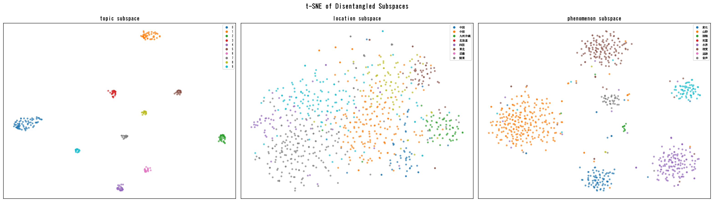

Metadata-based contrastive learning is applied post hoc to frozen foundation-model embeddings so that similarity between records can be decomposed into topic, region, and phenomenon axes. Relations that a single similarity score obscures can be inspected axis by axis, and exhibition visitors can explore related yōkai according to their interest. The retrieval stage of the apparatus runs on the same basis.